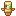

Create: Totem Factory
附属模组
依次使用动力锯和动力辊压机来处理黄铜板制得头部外壳…
这是什么
依次使用动力锯和动力辊压机来处理黄铜板制得头部外壳。然后给头部外壳注入抗火药水和再生药水并用黄铜锭密封，此过程会为其添加不死图腾标志性的鼻子。
命名空间：
totemfactory 1.20.1 版本：本页物品与配方直接取自该版本的 jar。全部物品24
不死图腾身体（半成品）totemfactory:incomplete_totem_body
没有工作台/机器配方
不死图腾身体外壳（半成品）totemfactory:incomplete_totem_body_casing
没有工作台/机器配方
不死图腾头部（半成品）totemfactory:incomplete_totem_head
没有工作台/机器配方
不死图腾头部外壳（半成品）totemfactory:incomplete_totem_head_casing
没有工作台/机器配方

不死图腾（半成品）totemfactory:incomplete_totem_of_undying
没有工作台/机器配方
不死图腾身体totemfactory:totem_body
不死图腾头部totemfactory:totem_head
不死图腾头部外壳totemfactory:totem_head_casing
铜金合金锭totemfactory:tumbaga_alloy